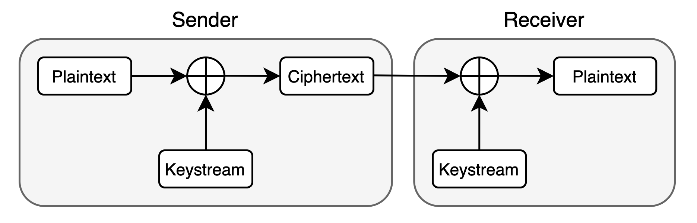
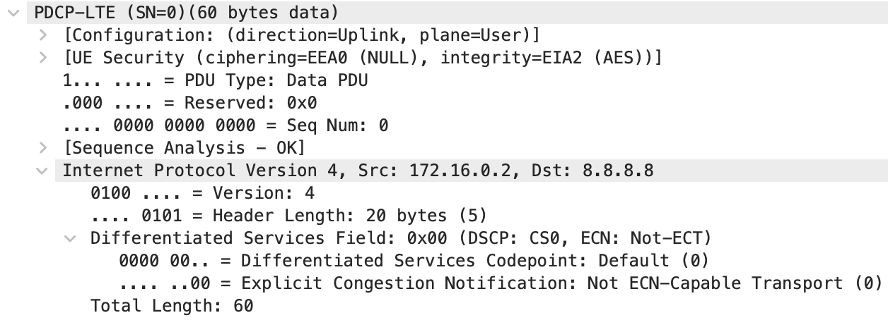
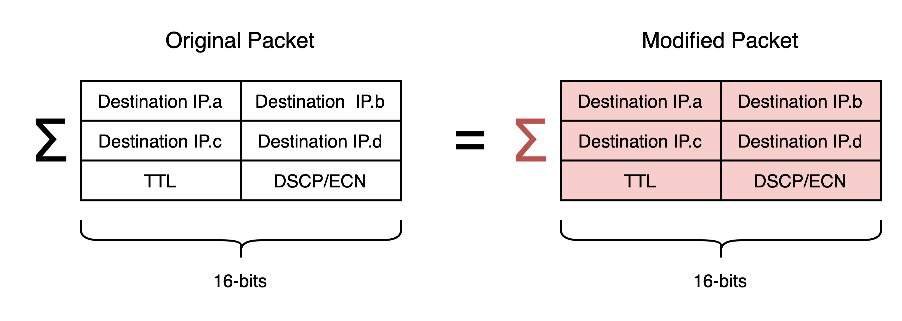
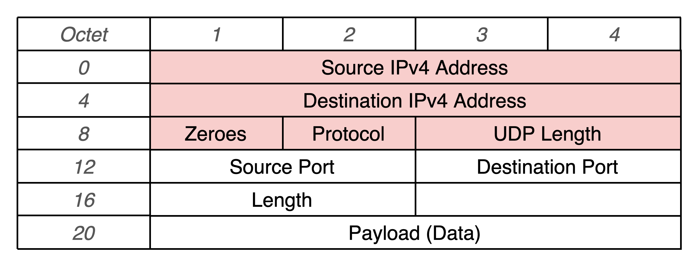

10 minutes
Executing Stream Cipher Attacks on IP Packets
For part of my bachelor’s dissertation, I implemented and executed a bit-flipping attack on encrypted IP packets in LTE networks. The attack was first documented by David Rupprecht et al. in their academic paper “Breaking LTE on Layer Two”.
The attack is possible due to a specification flaw in LTE standards, where IP packets are not integrity protected. Therefore, a man-in-the-middle (MITM) attacker can modify the packets and the receiver will decrypt them successfully since it can’t verify the authenticity of the data. This kind of attack is not specific to LTE networks, however, and can be executed in different environments.
I learned a lot while implementing this attack, which I thought would be worth documenting and sharing through this post. Some of this post will refer to LTE networks specifically, but I will try to keep much of it general. This post includes how to do bitmasking comfortably in C++, how to find packet offsets using appropriate tools, and how to compensate for any checksum errors in IP packets.
Stream Cipher Attack Explanation
In most LTE networks, IP packets are encrypted with a stream cipher (AES-CTR), where the encryption algorithm generates streams of bytes called keystreams. To encrypt data, the sender XORs the unencrypted message (the plaintext) with the keystream to obtain an encrypted message (the ciphertext). The ciphertext is then sent to the receiver. The receiver generates the same keystream and can XOR it with the received ciphertext to retrieve the plaintext.
As explained previously, a MITM attacker can successfully modify the ciphertext of internet packets in LTE networks such that they decrypt to a related plaintext. This is possible because the encryption algorithm used is a malleable cipher. If the attacker knows part of the plaintext of the encrypted data, they can apply a calculated manipulation mask (also referred to as a bitmask) to the ciphertext such that it decrypts into any chosen plaintext. The mask is calculated by XORing the plaintext with the message that the attacker wants to modify the plaintext to. The mask is then applied by XORing it with the ciphertext.
The attack works because data XORed with itself results in all zeroes, and all zeros XORed with any data keeps the data intact. For more detail, I highly recommend reading a short description of how the attack works on Wikipedia.

An attacker can apply the mask to only a part of the ciphertext, allowing for the attack if the entire plaintext is not known.
As an example, in the context of LTE networks, the network provides the IP of the DNS server that connected devices should use for DNS resolution. Therefore, the plaintext of the destination IP of DNS requests is known. A MITM attacker can use this to change the destination IP to an arbitrary address, hijacking the request.
Implementing the Bit-Flipping Stream Cipher Attack in C++
With the basics out of the way, I will explain how to implement a bit-flipping stream cipher attack where the plaintext is known in C++.
Obtaining Field Offsets
The encrypted packets can be encapsulated in various protocols, so the offset at which to apply the bitmask will differ depending on the context. With more common protocols, you can easily find this information on the internet. In other cases, Wireshark and some testing may be needed.
In my case of LTE networks and using the C++ srsLTE software suite, I was working with IPv4 packets encapsulated in the LTE PDCP protocol. Obtaining the offset of the destination IP in the IPv4 packet was trivial, but I found Salim Gasmi’s Hex Packet Decoder to be an excellent tool to help with this. The PDCP protocol only adds a 2-byte header to the front of IP packets, so I needed to add 2 to the IP packet offset for it to work in the context of PDCP packets.
To additionally verify if my assumptions were correct, I checked example packets in Wireshark. This would also likely need to be done when finding the offsets of more exotic, less well-documented protocols. To obtain the example packets, I captured packets in a test setup with known keys such that the packets could be decrypted. Since we’re working with a stream cipher, the offsets will be the same whether encryption is enabled or not. In the Wireshark capture, I was able to confirm that adding 2 to the IP packet offset was correct. This is shown below with the 2-byte PDP header but can also be verified by checking individual bytes.
Applying Bitmasks to Parts of Payload in C++
We now have the required offsets at which to mask parts of our packets. The next step is to apply the bitmask by XORing it with the encrypted payload. In my case of using srsLTE and LTE networks, the payload was represented by a uint8_t array.
To comfortably tweak my implementation and test it without having to set up an entire LTE network, I made myself a test script. To work with real data in the test script, I grabbed some example payloads (encrypted and unencrypted) from a test run and serialised them into a hex string. Then, my test script serialised it back into raw bytes when run. The code I personally used is by Robbie Rosati on Stack Overflow.
To calculate the bitmask, the known plaintext of the ciphertext is XORed with the plaintext that you would like the ciphertext to decrypt to. In C++ this is greatly eased by using a std::valarray as it’s compatible with regular bitwise operations. Then, the mask is XORed with the payload at the appropriate offset. Overall, the entire implementation looks as follows:
void apply_mask(uint8_t* buf, std::valarray<int> mask, int offset)
{
for (size_t i = offset; i < offset + mask.size(); i++) {
buf[i] ^= mask[i - offset];
}
}
int main() {
// De-serialise example payload (for testing only)
std::string buf_str = "80004500004ce33d00007811";
uint8_t buf[buf_str.length() / 2];
object_from_hex(buf_str, &buf);
// Store plaintext and the modified plaintext as std::valarray
std::valarray<int> dest_ip_modified{178, 62, 108, 207};
std::valarray<int> dest_ip_plaintext{103, 123, 226, 10};
// Calculate the bitmask
auto ip_mask = dest_ip_plaintext ^ dest_ip_modified;
// Store the previously found offset of our known plaintext
int pdu_dst_ip_byte_offset = 18;
// Apply the bitmask to the payload
apply_mask(buf, ip_mask, pdu_dst_ip_byte_offset);
}
Compensating for the IPv4 Checksum
In the example above, the destination IP of IPv4 packets is modified. The checksum is left intact, which will most likely be invalid with the new IP address. In effect, these packets will be correctly encrypted, but the network stack at the receiver is likely to discard them.
For the receiver to not discard the packets, the checksum will need to be preserved. This can be done by modifying other fields in the packets, whose fields we can reliably predict. To do this, we first need to understand hot IPv4 checksums are calculated. As stated in the Internet Protocol RFC 791:
“The checksum field is the 16-bit ones' complement of the ones' complement sum of all 16-bit words in the header. For purposes of computing the checksum, the value of the checksum field is zero.”
This is quite a mouthful and personally, I found it difficult to grasp without seeing an example. For a great one, I recommend checking the IPv4 header checksum Wikipedia page.
In the case of compensating for changes in the destination IP address, this entails calculating the difference between the 16-bit sums of the original and the modified IP addresses and tweaking other fields appropriately. Note that the 16-bit sum will mean that the first and the third octets of each IP address in the sum are shifted left 8 bits in the checksum calculation.
In LTE networks, we can reliably predict the TTL of packets sent from some devices to the first mast, as it won’t yet be decremented. This gives us the ability to compensate for changes in the first and third octets of the IP. To compensate for changes in the second and fourth octets, I performed an investigation by sending hand-crafted DNS packets with broken fields to a remotely hosted VM and checking if they’re received and processed correctly. The aim was to establish which fields are not necessary for routing and could be modified. This was easily done using Scapy. Eventually, I found that the DSCP and ECN fields could be predicted and didn’t impact routing, so these gave enough room for me to be able to compensate for changes in the second and fourth octets of the IP.
IP Checksum Compensation Code Example
To verify if my IP checksum compensation code worked, I added an implementation of it to my test script from before.
To compensate for changes in the first and third IP octet using the TTL field:
/* Mask TTL */
// Store the TTL field plaintext
int ttl_plaintext = 64;
// Calculate the difference in the 16-bit totals of the original and modified destination IPs
int dest_ip_plaintext_total = (dest_ip_plaintext[0] << 8) + dest_ip_plaintext[1] + (dest_ip_plaintext[2] << 8) + dest_ip_plaintext[3];
int dest_ip_modified_total = (dest_ip_modified[0] << 8) + dest_ip_modified[1] + (dest_ip_modified[2] << 8) + dest_ip_modified[3];
int chksm_difference = dest_ip_plaintext_total + (ttl_plaintext << 8) - dest_ip_modified_total;
// Extract only the higher byte from the difference that the TTL field can compensate for
int ttl_modified = chksm_difference >> 8;
// Assert that the modified TTL field is valid
assert(ttl_modified >= 20 && "TTL under 20: may not reach the destination");
assert(ttl_modified <= 255 && "TTL over 255: too large");
// Calculate the bitmask
int ttl_mask_val = ttl_plaintext ^ttl_modified;
std::valarray<int> ttl_mask = {ttl_mask_val};
// Apply the bitmask to the ciphertext
int ttl_byte_offset = 10;
apply_mask(buf, ttl_mask, ttl_byte_offset);
To compensate for changes in the second and fourth IP octet using the DSCP and ECN fields:
/* Mask DSCP/ECN */
// Store the DSCP/ECN field plaintext
int dscp_ecn_plaintext = 0;
// Extract only the lower byte from the difference that the DSCP/ECN field can compensate for
int dscp_ecn_modified = chksm_difference & 0xFF;
// Assert that the modified DSCP/ECN value is valid
assert(dscp_ecn_mod >= 0 && "DSPCP/ECN under 1: invalid");
assert(dscp_ecn_mod <= 255 && "DSPCP/ECN above 255: invalid");
// Calculate the bitmask
int dscp_ecn_mask_val = dscp_ecn_plain ^dscp_ecn_mod;
std::valarray<int> dscp_ecn_mask = {dscp_ecn_mask_val};
// Apply the bitmask to the ciphertext
int pdu_dscp_ecn_byte_offset = 3;
apply_mask(buf, dscp_ecn_mask, pdu_dscp_ecn_byte_offset);
Caveats of Stream Cipher Attacks on IP Packets
Impossible to Compensate for Changes
You may that it won’t be possible to compensate for some changes in the fields, especially to the higher byte of the 16-bit sum. The lower byte can always carry into the higher byte, but the higher byte doesn’t have this luxury. If it’s not possible to find enough fields whose plaintext can be predicted, it may not be possible to compensate for any changes unless some external changes are made.
This is an issue that I have encountered, where the destination IP couldn’t be compensated for. In my case, I was redirecting DNS packets to a remote VM that I controlled, so I had control over the modified destination IP. I fixed this issue by deploying a VM hosted by another provider or in another region, such that the IP would differ adequately.
Incorrect UDP/TCP Checksums
Another issue that could occur is that the UDP checksum will be incorrect, causing the receiver to discard the packet. This occurs because the UDP checksum is calculated separately from the IP checksum. If you control the receiver, this issue could be alleviated by ignoring UDP checksums. There is conflicting advice on how to do this online, so I wrote a guide on how to disable UDP checksum validation in Linux which you can find here.
I’ve attempted to correct the UDP checksum by masking other fields in the packet as well. Below is a diagram of all the fields that are used to calculate the UDP checksum, where the red fields are from the IPv4 packet:
After modifying every non-payload field to see if the packets will be received, I found that Linux rejected them at the kernel level. The only promising change that worked was when part of the payload could be predicted and modified. Otherwise, pervasive changes would need to be made to the IP stack such that any incorrect fields are ignored and corrected.